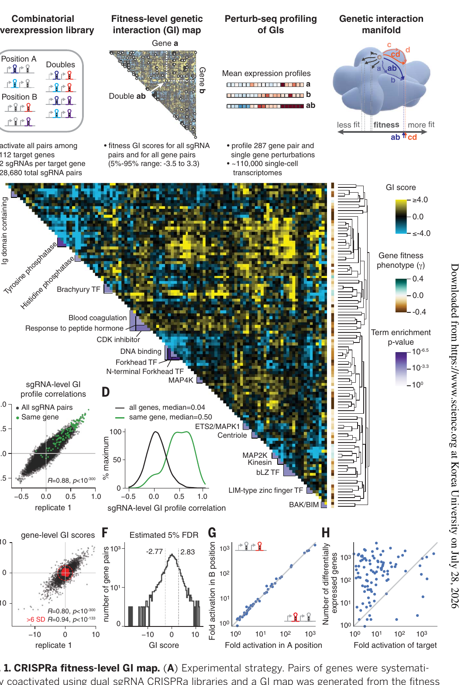
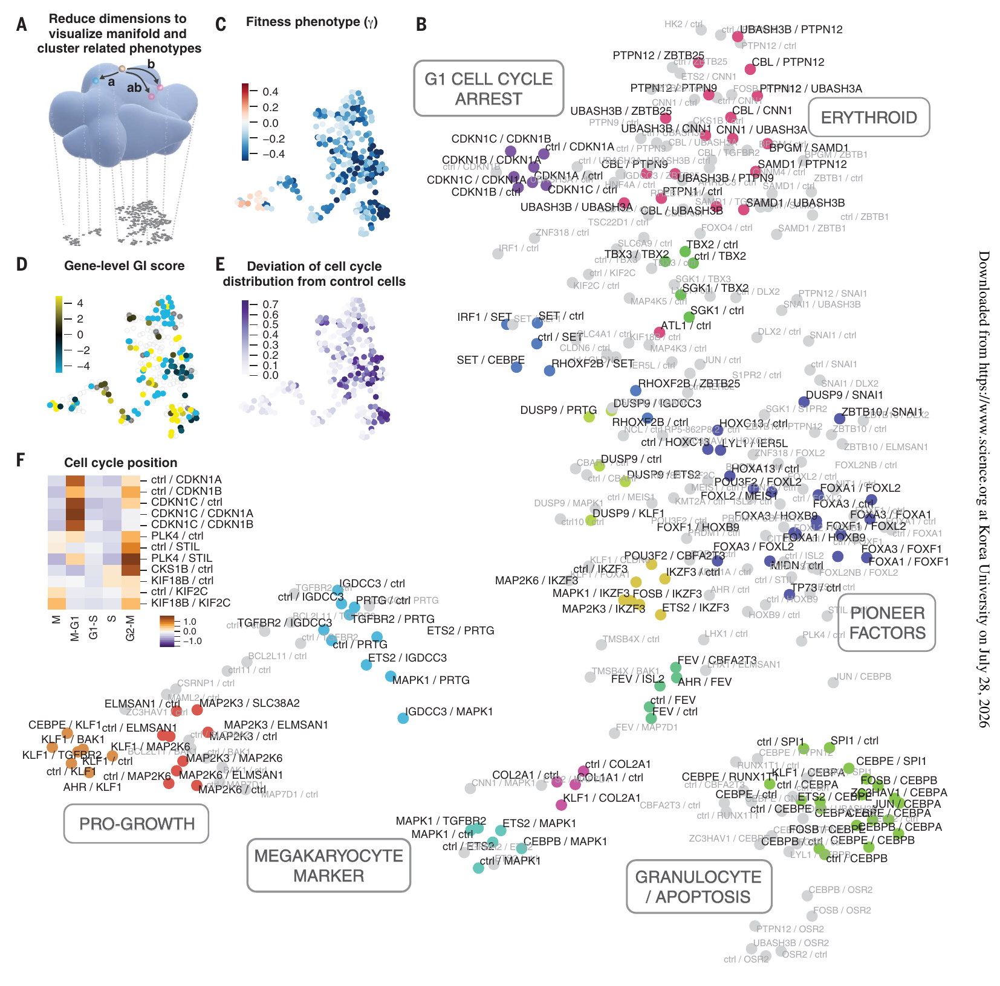
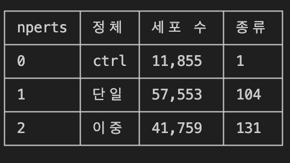
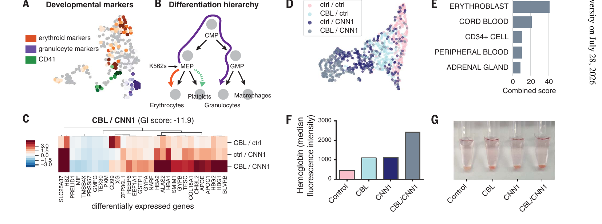
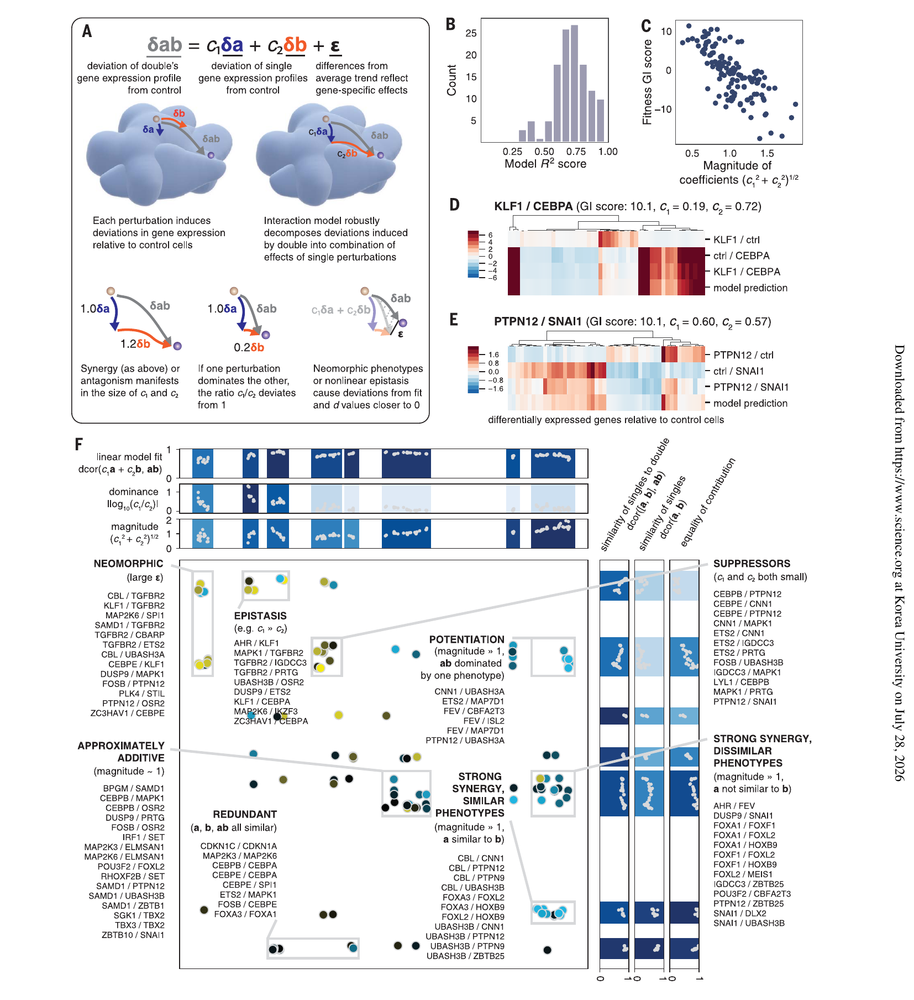
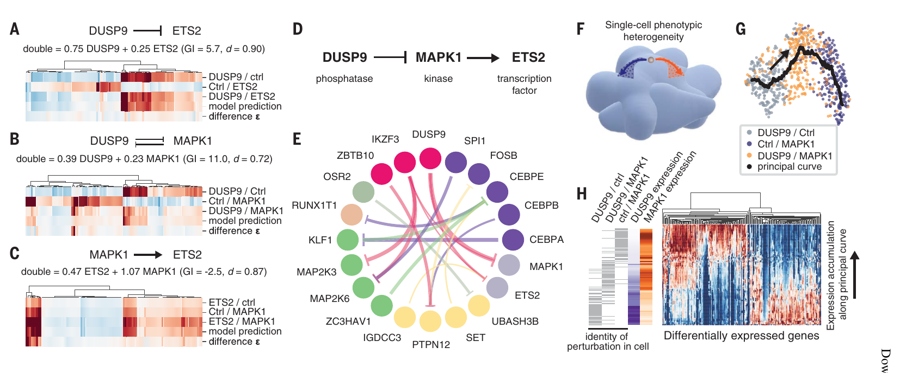
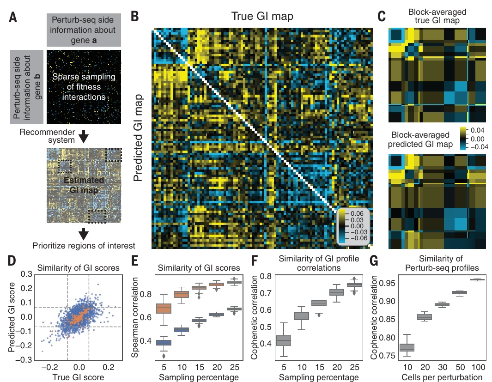

Norman
Norman, T.M. et al. Exploring genetic interaction manifolds constructed from rich single-cell phenotypes. Science 365, 786–793 (2019). K562 CRISPRa Perturb-seq, 287 perturbation(단일 104 + 조합 131 + ctrl), ~110,000 세포.
Fig. 1 — CRISPRa fitness-level GI map
- K562 에 CRISPRa dual-sgRNA 라이브러리를 넣고 스크린 시작지점과 10일 배양 후의 sgRNA 쌍 존재비를 비교함.
표적 유전자 112개, 유전자당 sgRNA 2개, 총 28,680개 sgRNA 쌍 (FYI ↓)
- 112개는 무작위 유전자가 아니라 "hit" 유전자 — 단독 활성화만으로 K562 성장을 촉진하거나 지연시키는 것으로 이미 알려진 것들. 단독으로 표현형이 있는 유전자가 다른 유전자와 GI를 일으킬 확률이 높다는 선행 관찰에 근거한 선택
- 유전자당 sgRNA 2개인 이유 = 기술적 반복(independent guides). 같은 유전자를 노리는 서로 다른 guide 2개가 비슷한 결과를 내는지가 off-target·guide 고유 효과를 걸러내는 검사
- 28,680이 나오는 계산: 표적 sgRNA 224개(112 유전자 × 2) + nontargeting control sgRNA 15개 = 239개. 이 239개의 순서 무관 쌍(자기 자신과의 쌍 포함) = 239 × 240 / 2 = 28,680.(정확한 수는 table S2)
- 이 라이브러리로 잰 것: K562 + SunTag CRISPRa 시스템에 라이브러리를 형질도입하고, 스크린 시작 시점과 10일 배양 후의 sgRNA 쌍 존재비를 비교해 fitness(성장 표현형 γ)를 얻는다. 잘 자란 조합은 존재비가 늘고, 죽거나 멈춘 조합은 줄어든다.
- 규모 감각: 112개 유전자에서 가능한 유전자쌍은 C(112,2) = 6,216쌍. 여기에 단독 112개가 더해진다. 이 fitness GI map 전체 중 132개 유전자쌍을 골라 Perturb-seq로 후속 전사체 프로파일링했고, 단독 A·단독 B·쌍 AB를 모두 포함해 총 287 perturbation의 전사체를 얻었다(~110,000 세포, 조건당 중앙값 273 세포).

- (A) 실험 전략. dual sgRNA CRISPRa 라이브러리로 유전자 쌍을 동시에 과발현시켜 fitness 기반 GI (Genetic interaction) map을 만들고, 그 일부를 Perturb-seq로 전사체 프로파일링해 'GI manifold'를 정의.
- 핵심 주장: fitness라는 스칼라로는 같아 보이는 GI도 manifold 상에서는 전혀 다른 위치에 있을 수 있다.
- fitness: 세포가 얼마나 잘 자랐는지 측정하는 값 (γ)
- GI score = (AB를 함께 켰을 때 관측된 fitness) − (A 단독·B 단독 효과로 기대되는 fitness)
💡 DEG 자체는 고차원 벡터, 그 벡터들이 이루는 면이 GI manifold, fitness는 GI manifold 를 1차원으로 누른 값이라 생각하면 됨.
→ 그래서 fitness값은 같지만, GI manifold에서 보면, c1,c2의 계수 값이 달라서 epistasis와 suppresion을 구분할 수 있게 됨.
- 핵심 주장: fitness라는 스칼라로는 같아 보이는 GI도 manifold 상에서는 전혀 다른 위치에 있을 수 있다.
- (B) gene-level GI map 히트맵.
- Pearson 상관 기반 average-linkage 계층 클러스터링, DAVID term이 유의하게 농축된 클러스터에 주석. 우측 컬러바 3종 = GI score / gene fitness phenotype γ / term enrichment p-value.
- 각 클러스터의 유전자 집합에 대해 DAVID term이 유의하게 농축됐는지 초기하 검정
❓ DAVID term (Database for Annotation, Visualization and Integrated Discovery (NIH/NIAID))
- functional enrichment tool
출처 예 GO (BP/MF/CC) blood coagulation, response to peptide hormone, DNA binding 단백질 도메인 (InterPro/Pfam/SMART) Ig domain containing, Forkhead TF, N-terminal Forkhead TF 효소·단백질 패밀리 Tyrosine phosphatase, Histidine phosphatase, MAP4K 경로 DB (KEGG 등) / UniProt keyword CDK inhibitor, Brachyury TF
- Pearson 상관 기반 average-linkage 계층 클러스터링, DAVID term이 유의하게 농축된 클러스터에 주석. 우측 컬러바 3종 = GI score / gene fitness phenotype γ / term enrichment p-value.
- (C) sgRNA 수준 GI 프로파일 상관의 replicate 재현성 산점도.
- 검정 = 임의의 유전자쌍 sgRNA, 초록 = 같은 유전자를 노리는 sgRNA.
R = 0.88. - → 얼마나 robust한지를 보여주고 있음.
- 독립 반복 실험에서 R=0.88이기도 하고, 같은 유전자를 타겟한 다른 guide끼리의 GI map이 유사하기도 하고
- 검정 = 임의의 유전자쌍 sgRNA, 초록 = 같은 유전자를 노리는 sgRNA.
- (D) 같은 데이터의 히스토그램.
- all pairs 중앙값 0.04 vs same gene 중앙값 0.50
- → 동일 유전자 타깃 sgRNA끼리 프로파일이 훨씬 유사하다는 시약 특이성 근거.
- (E) gene-level GI score의 replicate 산점도(모든 sgRNA-level GI를 유전자쌍별로 평균).
- 전체 R = 0.80, 비대조군 6 SD 밖 R = 0.94. (SD filtering 사용의 이유: noise 제거 후 R 계산)
- 빨간 점 = nontargeting control 쌍, 점선 = control로부터 6 SD 반경.
💡 동일 유전자를 타겟으로한 sgRNA를 평균적으로 2개씩 사용을 했기 때문에, 이걸 평균내서 gene-level GI score로 사용함. 그에 대한 QC가 e패널
- 전체 R = 0.80, 비대조군 6 SD 밖 R = 0.94. (SD filtering 사용의 이유: noise 제거 후 R 계산)
- (F) gene-level GI score 히스토그램과 경험적 5% FDR 경계(−2.77 / +2.83). 이 경계 밖이 '유의한 GI'.
- (G) 이중 sgRNA 카세트의 A 위치 vs B 위치에서 측정한 타깃 fold activation 비교.
- → 대각선에 몰려 있음 = 카세트 내 위치 효과 거의 없음.
❓
- fold activation?: 표적 유전자의 mRNA가 대조군 대비 몇 배로 올라갔는지
- KLF1(A) + CEBPA(B)
CEBPA(A) + KLF1(B) → 이 두 경우에서 차이가 없다 = 위치 효과가 없다
- (H) 타깃 fold activation vs 차등발현 유전자 수. 상관이 거의 없음(R = 0.07) — mRNA (타겟 유전자 only) 증가폭이 작아도 세포 상태를 크게 바꿀 수 있다는 뜻.
Fig. 2 — GI manifold 시각화

- (A) 개념도. 다양한 perturbation을 관측하면 manifold의 구조를 추론할 수 있고, 이를 평면으로 차원축소해 시각화.
- (B) 287개 perturbation(단일 + 유전자쌍)의 평균 발현 프로파일 UMAP.
- 점 하나 = perturbation 하나. HDBSCAN으로 잡힌 안정 클러스터만 색칠(회색 = 미분류).
- single, combo 다 같이 있음. (single= gene/ ctrl 형식으로 기록되어 있음.)

❓ 어떻게 umap 그림?
- 세포 → perturbation으로 평균 내기. ~110,000개 세포를 perturbation별로 묶어 발현 프로파일을 평균(조건당 중앙값 273세포). 결과는 287 perturbation × 유전자 수 행렬. (Pseudobulk)
- (C) 같은 UMAP 좌표에 fitness(유전자쌍 growth phenotype γ) 오버레이.
- → 성장속도로는 manifold 구조 설명이 안됨.
- (D) fitness-level GI score 오버레이(단일 perturbation 제외).
- → GI로도 안되더라
- (E) cell cycle deviation score — 대조군의 세포주기 위상 분포에서 얼마나 벗어났는지. 진할수록 강한 교란.
- →
전사체 → fitness 설명 가능 (세포주기 정지 → 그래서 성장이 느리다)
🔗 핵심: 스칼라 fitness/GI로는 뭉개지는 것이 전사체 manifold에서는 적혈구·과립구·거핵구 분화, 세포주기 정지 같은 '생물학적 프로그램'으로 분해된다.
- →
- (F) 선택된 perturbation들의 세포주기 위상(M, M-G1, G1-S, S, G2-M)별 상대 증감 히트맵.
- → CDKN1A/1B/1C 계열은 예상되는 위상에서 정지, PLK4/STIL/KIF18B/CKS1B 등은 다른 패턴.
❓ PLK4/STIL/KIF18B/CKS1B → 중심체·유사분열 기구 유전자
- PLK4 — polo-like kinase 4. 중심립(centriole) 복제를 개시하는 키나아제. 과발현하면 중심체가 과증폭돼 다극성 방추가 생김
- STIL — 중심립 조립에 필수인 PLK4의 파트너. 그래서 PLK4/STIL 조합에서 G2-M 축적이 가장 강하게 나온 것과 앞뒤가 맞음
- KIF18B — kinesin-8 계열, 유사분열 방추의 미세소관을 다룸 (짝으로 나오는 KIF2C=MCAK도 kinesin-13 탈중합효소)
- CKS1B — CDK1/2의 조절 서브유닛
Fig. 3 — 하나의 GI 해부 (CBL / CNN1)

- (A) 조혈 세포종 마커 패널의 평균 발현 Z-score를 GI manifold UMAP에 오버레이(erythroid / granulocyte / CD41).
- (B) 조혈 분화 계통도. K562는 미분화된 erythroid-like 세포주로, MEP 쪽으로 치우쳐 있음.
- (C) CBL/CNN1 GI(GI score −11.9)의 Perturb-seq 프로파일. 두 단일 perturbation과 이중 perturbation의 대조군 대비 차등발현 히트맵. 헤모글로빈(HBA1/HBA2/HBG1/HBG2/HBZ), 철 수입체 SLC25A37, 혈액형 항원 GYPA/GYPB(CD235a)가 이중에서 크게 유도 — 본문 기준 헤모글로빈 6~39배, SLC25A37 13배, GYPA 2배.
- (D) CBL/CNN1 조합의 단일세포 UMAP. 점 = 세포, 색 = 유전적 배경. ctrl/ctrl → CBL/ctrl · ctrl/CNN1 → CBL/CNN1로 이어지는 표현형의 연속적 진행이 보임.
- (E) ARCHS4 cell-type term 농축 분석. ERYTHROBLAST가 압도적 1위(그다음 CORD BLOOD, CD34+ CELL).
- (F) 다른 세포계에서의 검증. 인간 적혈구 전구세포 HUDEP2에 cDNA를 과발현했을 때 헤모글로빈 형광 강도(항-태아헤모글로빈 항체 + flow cytometry). Control < CBL ≈ CNN1 < CBL/CNN1.
- (G) 같은 실험의 HUDEP2 펠릿 사진 — CBL/CNN1이 육안으로도 가장 붉음.
🔗 핵심: 기능이 잘 알려지지 않은 유전자(CNN1)라도 Perturb-seq가 GI의 메커니즘 가설(적혈구 분화 유도)을 직접 제시하고, 그 가설이 다른 세포계에서 검증된다.
Fig. 4 — 고차원 GI의 정량 모델

- (A) 모델 개념도. \(δab = c₁·δa + c₂·δb + ε \)
- 이중 perturbation의 대조군 대비 변화를 두 단일 변화의 선형결합으로 분해. manifold 위의 '이동 벡터'로 해석한다. 계수 크기가 크면 synergy/antagonism, c₁/c₂ 비가 1에서 벗어나면 한쪽이 dominance, ε가 크면 neomorphic(비선형 에피스타시스).
- (B) Perturb-seq로 측정한 전체 GI에 대한 모델 R² 분포. 평균 0.71
- → 발현 변이의 70% 이상을 선형 모델이 설명. 왼쪽 꼬리(낮은 R²)가 neomorphic 후보.
- (C) 모델 계수 크기 (c₁²+c₂²)^½ vs fitness-level GI score. R = −0.72의 강한 반상관 — buffering 상호작용은 manifold 상에서 짧게 이동하고, synthetic sick/lethal은 멀리 이동한다는 해석.
❓ 여기서 R2가 검정하는 것
- 단위: 유전자쌍 하나 = 회귀 하나 = R² 하나
- 검정하는 것: 이중 교란의 반응 δab가, 두 단일 반응 δa·δb가 만드는 2차원 평면 안에 있는가. δa와 δb의 방향은 고정이고 길이(c₁, c₂)만 조절하므로, 자유 파라미터 (c1,c2)는 수천 차원 벡터에 대해 단 2개다. 그 2개로 δab 분산의 몇 %를 재현했는지가 R².
- 낮으면 → ε이 크다, 즉 두 단일 어느 조합으로도 못 만드는 새 방향이 생겼다(neomorphic 후보).
- 주의: R²는 절대적 판정 기준이 아니다. 교란 자체가 약해 δab가 작으면 설명할 분산이 작아서 잡음만으로도 R²가 무너진다. 그래서 논문은 distance correlation d를 따로 계산해 병용하고(fig. S11D), Fig. 4F의 축으로는 R²가 아니라 dcor를 쓴다.
- (D) 적용 예 1: KLF1/CEBPA (GI score 10.1, c₁ = 0.19, c₂ = 0.72). 계수가 비대칭 → 유전적 에피스타시스(한쪽 표현형이 다른 쪽을 가림). 히트맵 행: 단일 2개, 이중, 그리고 model prediction.
- (E) 적용 예 2: PTPN12/SNAI1 (GI score 10.1, c₁ = 0.60, c₂ = 0.57). 두 계수가 모두 작고 비슷함 → 유전적 억제(서로의 표현형을 감쇠). GI score는 D와 같은데 메커니즘은 다르다는 것이 요점.
- (F) 측정된 모든 GI의 2차원 지도.
- → x축 = 모델 계수 유래 특징(linear model fit dcor, dominance log₁₀(c₁/c₂), magnitude), y축 = 전사 프로파일 유사도 특징. 두 관점을 각각 UMAP으로 1차원 축약해 축을 만들고, 클러스터에 범주를 주석: NEOMORPHIC, EPISTASIS, POTENTIATION, SUPPRESSORS, REDUNDANT, APPROXIMATELY ADDITIVE, STRONG SYNERGY(유사/비유사 표현형).
❓ 차원 축소 방식
- GI 하나마다 특징 6개를 계산한다 — 두 묶음으로 나뉜다.
묶음 특징 3개 c₁·c₂를 쓰는가 모델 관점 → x축 dcor(c₁a + c₂b, ab) · |log₁₀(c₁/c₂)| · (c₁²+c₂²)^½ 쓴다 유사도 관점 → y축 dcor([a, b], ab) · dcor(a, b) · equality of contribution 안 쓴다 (관측 프로파일끼리만 비교) - 묶음별로 따로 클러스터링하고, UMAP을 n_components=1로 돌려 1차원 좌표로 축약한다.
- x = 모델 관점의 1D 좌표, y = 유사도 관점의 1D 좌표. UMAP 한 번을 2차원으로 돌린 것이 아니라, 서로 다른 UMAP 두 개를 각각 1차원으로 돌려 축 두 개를 만든 것이다.
- 축 자체는 단위도 방향도 의미가 없으므로, 원래 특징 3개를 축 옆에 띠(strip)로 붙여 해독기로 쓴다
- 왜 2차원으로 배치했나: 같은 계수 패턴이라도 프로파일 유사도가 다르면 다른 생물학이기 때문이다. STRONG SYNERGY가 similar / dissimilar phenotypes 두 범주로 갈리는 것이 그 예 — x축(magnitude 큼)은 같고 y축(a와 b가 서로 닮았나)에서 갈린다. x축만으로는 구분 불가.
- 주의: UMAP을 1차원으로 돌리는 것은 이례적이고 2차원보다 훨씬 불안정하다(파라미터·초기값에 따라 순서가 바뀔 수 있음). 축 좌표를 정량적으로 인용하면 안 되고, 범주 경계도 통계적 컷이 아니라 수동 주석이다. 인용할 값은 축 위치가 아니라 개별 GI의 c₁·c₂·dcor.
- → x축 = 모델 계수 유래 특징(linear model fit dcor, dominance log₁₀(c₁/c₂), magnitude), y축 = 전사 프로파일 유사도 특징. 두 관점을 각각 UMAP으로 1차원 축약해 축을 만들고, 클러스터에 범주를 주석: NEOMORPHIC, EPISTASIS, POTENTIATION, SUPPRESSORS, REDUNDANT, APPROXIMATELY ADDITIVE, STRONG SYNERGY(유사/비유사 표현형).
🔗linear model fit (dcor), dominance log₁₀(c₁/c₂), magnitude (c₁²+c₂²)^½.
- linear model fit = dcor(c₁a + c₂b, ab) — 모델 예측과 실제 이중 반응의 거리상관(distance correlation). 0~1.
- dominance = |log₁₀(c₁/c₂)| — 두 계수의 비(ratio). log를 취하는 이유는 비율이 곱셈 척도라서다 — 2배와 1/2배가 log에서 +0.30과 −0.30으로 대칭이 된다. 절댓값을 씌우는 이유는 어느 쪽이 우세한지는 버리고 비대칭의 크기만 재기 위해서다.
- 0이면 두 유전자의 기여가 균등하고, 값이 크면 한쪽이 지배 = 에피스타시스.
- magnitude = (c₁²+c₂²)^½ — 계수 벡터의 길이. manifold 위에서 이중 교란이 대조군으로부터 얼마나 멀리 이동했나에 해당한다.
- 작으면 buffering·억제(짧게 이동), 크면 시너지·synthetic lethal(멀리 이동). Fig. 4C가 이 값과 fitness GI score의 상관이 R = −0.72임을 보인다.
- 논문에 나온 세 GI로 실제 값을 계산하면:
GI c₁, c₂ dominance magnitude 유형 KLF1 / CEBPA 0.19, 0.72 0.58 0.74 에피스타시스 (비대칭 큼) PTPN12 / SNAI1 0.60, 0.57 0.02 0.83 억제 (균등하고 둘 다 작음) CBL / CNN1 1.24, 0.80 0.19 1.48 시너지 (길이 큼)
- 참고 — 완전 가산(c₁ = c₂ = 1)이면 magnitude는 √2 ≈ 1.41인데, Fig. 4F는 APPROXIMATELY ADDITIVE 범주를 "magnitude ~ 1"로 표기한다. 즉 실제 가산형 GI의 계수는 각각 0.7 근처라는 뜻이고((0.7² + 0.7²)^½ = 0.99), 이는 이중 반응이 두 단일의 단순 합보다 작다는 신호다. 우리가 관찰한 magnitude undershoot과 통하는 지점. (이 마지막 해석은 논문의 진술이 아니라 계수에서 역산한 추론이다.)
c₁·c₂ 값 패턴 → GI 유형
| 패턴 | 읽는 법 | 논문 실제 예 |
|---|---|---|
| c₁ ≈ c₂ ≈ 1 | 완전 가산 — 이중 = 단일 두 개 합 | APPROXIMATELY ADDITIVE 클러스터 |
| 크기 (c₁²+c₂²)^½ 큼 | 시너지 — 기대보다 멀리 이동 | CBL/CNN1 (c₁=1.24, c₂=0.8) |
| 크기 작음, 둘 다 비슷 | 억제 — 서로 깎아먹음 | PTPN12/SNAI1 (c₁=0.60, c₂=0.57) |
| 비율 c₁/c₂가 1에서 멀어짐 | 지배/에피스타시스 — 한쪽이 다른 쪽을 가림 | KLF1/CEBPA (c₁=0.19, c₂=0.72) |
| ε가 큼 (R²·dcor 낮음) | neomorphic — 두 단일 어느 조합으로도 못 만드는 새 표현형 | Fig. 4B의 낮은 R² 봉우리 |
Fig. 5 — GI 밑의 유전자 조절 논리

- (A) DUSP9 ⊣ ETS2. double = 0.75·DUSP9 + 0.25·ETS2 (GI 5.7, d = 0.90)
- → DUSP9 쪽 계수가 3배로 우세, 즉 DUSP9 표현형이 ETS2를 가린다.
- (B) DUSP9 ⊣ MAPK1. double = 0.39·DUSP9 + 0.23·MAPK1 (GI 11.0, d = 0.72) — 두 계수가 모두 작음, 서로 길항.
- (C) MAPK1 → ETS2. double = 0.47·ETS2 + 1.07·MAPK1 (GI −2.5, d = 0.87) — MAPK1 쪽이 우세.
- (D) A~C의 계수 비대칭으로부터 추론한 경로 순서: DUSP9(포스파타아제) ⊣ MAPK1(키나아제) → ETS2(전사인자). 알려진 생화학과 일치.
DUSP9는 포스파타아제입니다. MAPK1을 아무리 많이 만들어내도 DUSP9가 탈인산화로 꺼버립니다. 그러니 둘을 함께 켜면 결과는 DUSP9 단독과 비슷 → DUSP9의 계수가 큼.
- (E) 같은 논리를 모든 buffering 상호작용에 적용해 방향을 부여한 원형 네트워크. 화살표는 동시 교란 시 '우세한' 유전자에서 출발하고, 화살표 굵기 = 계수 비대칭 정도(dominance 강도), 노드 색 = 전사 프로파일이 유사한 군.
- (F) 개념도. 확률적 이질성 때문에 같은 perturbation을 가진 개별 세포들이 manifold 위 주변 공간을 탐색한다.
- (G) DUSP9/MAPK1 단일세포 UMAP에 principal curve(검정 선)를 적합. DUSP9/ctrl, ctrl/MAPK1, DUSP9/MAPK1 세포가 이 곡선을 따라 배치되며, 화살표는 평균 이동 방향.
❓ how to principal curve(검정 선)를 적합?
- 개념: PCA의 1차 주성분(직선)을 곡선으로 일반화한 것. 데이터 구름을 관통하는 매끄러운 곡선으로, 모든 점에서 곡선까지의 거리 제곱합을 최소화한다. 정의상 self-consistent — 곡선 위의 각 지점은 그 지점에 투영되는 데이터들의 평균이어야 한다. 직선으로는 휘어진 표현형 스펙트럼을 따라갈 수 없기 때문에 곡선을 쓴다.
- 적합 알고리즘 (교대 반복, EM과 유사):
- 초기화 — 1차 주성분 직선에서 출발
- projection step — 각 세포를 현재 곡선에 투영하고, 곡선 시작점부터의 호길이(arc length) λ를 그 세포의 위치값으로 부여
- smoothing step — 각 좌표를 λ의 함수로 보고 국소회귀/스플라인으로 매끄럽게 다시 그려 곡선을 갱신
- 2~3을 수렴할 때까지 반복
- 논문이 댄 근거는 (27) = Trapnell et al., Nat. Biotechnol. 32, 381–386 (2014) — Monocle, 즉 세포를 궤적 위에 순서 지어 배열하는 pseudotime 계열의 원조 논문
- (H) principal curve 위치 순으로 세포를 정렬한 발현 히트맵.
- → 좌측 3열 = 그 세포의 유전적 배경, 우측 = 차등발현 유전자. 곡선을 따라 국소 중앙값을 내면 DUSP9/MAPK1 활성에 대한 민감도가 전사체마다 다르게 나타남(예: GYPA는 DUSP9 활성에 민감, HBZ는 덜 민감).
Fig. 6 — GI 지형 탐색을 위한 추천 시스템

- (A) 예측 전략 개요. fitness GI의 일부만 측정하고, 각 유전자를 Perturb-seq 전사 프로파일로 특징지어 그 유사도를 side information으로 넣어, 행렬 분해 기반 추천 시스템으로 나머지 GI를 임퓨테이션하고 관심 영역을 좁힌다.
❓ 행렬 분해 기반 추천 시스템
- 문제: 쌍의 수가 유전자 수의 제곱으로 폭발한다. 112개 유전자 → 6,216쌍이지만 전 단백질코딩 2만 개면 약 2억 쌍. 전수 측정 불가.
- 착안: GI map은 low-rank다. 같은 기능 모듈의 유전자들은 GI 프로파일이 서로 닮아 실질 자유도가 칸 수보다 훨씬 적다 → 일부만 알아도 나머지를 복원할 수 있다. (Impute)
- 방법: 10%만 측정하고 나머지는 빈칸으로 둔 뒤 행렬 분해로 채운다.
- 핵심 = side information: 행렬 밖의 정보로 각 유전자의 단일 교란 Perturb-seq 프로파일을 넣어 "전사 반응이 닮은 유전자는 GI 프로파일도 닮게" 제약한다. 측정된 쌍이 거의 없는 유전자도 전사적으로 닮은 이웃에서 정보를 빌릴 수 있어 성능이 크게 향상됨(fig. S14D).
- 용도: 예측 지도를 결론으로 쓰는 게 아니라, 강한 GI가 몰릴 것 같은 블록을 골라 실제 실험을 집중시키는 우선순위 도구다. 실제로 개별 값보다 "어디에 뭐가 몰려 있나"가 잘 맞는다(10% 샘플링 시 Spearman ρ ≈ 0.5, block-averaged는 훨씬 높음).
- (B) 무작위 10% 샘플링만으로 예측한 GI map vs 실제 GI map(상삼각/하삼각 대비). 대규모 구조가 상당히 보존됨.
- (C) 클러스터 내에서 GI score를 평균낸 block-averaged 지도(실제 · 예측). 개별 값보다 블록 수준이 훨씬 잘 복원된다.
- 개별 예측마다 오차가 있는데, N개를 평균내면 오차가 √N배로 줄어들어서
- 모듈과 모듈간의 상호작용을 파악해서 모듈 내 새로운 유전자 타겟을 찾을 수는 있지만, 블록 패턴을 깨는 개별 쌍의 경우 해당 시스템의 예외 케이스가 됨.
- (D) (B)의 실제 vs 예측 GI score 산점도. 파란 점 = 개별 GI, 주황 점 = (C)의 block-averaged. 점선 = 5 / 95% 분위로, strong GI를 정의하는 경계.
- (E) 샘플링 비율(5~25%)에 따른 실제-예측 Spearman 상관. 각 수준마다 무작위 부분집합 50개. 파랑 = 개별, 주황 = block-averaged. 10% 샘플링에서 ρ ≈ 0.5.
- (F) 샘플링 비율에 따른 GI 프로파일의 cophenetic 상관 — 실제와 예측 GI map의 상관 구조(계층적 유사성)가 얼마나 보존되는지.
❓ cophenetic 상관
- 정의: 계층 클러스터링(덴드로그램)이 원래의 쌍별 거리를 얼마나 충실히 보존하는지 재는 지표. 두 단계로 정의된다 — ① cophenetic distance = 두 대상이 덴드로그램에서 처음 같은 클러스터로 합쳐지는 높이. ② cophenetic correlation = 원래 거리 행렬과 이 cophenetic 거리 행렬의 피어슨 상관.
- 고전적 용도는 "이 덴드로그램이 데이터를 잘 요약하나"를 자체 점검하는 것이지만, 이 논문은 두 데이터셋의 계층 구조가 서로 일치하는지를 재는 데 쓴다
Fig. 6F — 샘플링 비율 cophenetic 상관 Fig. 6G — perturbation당 세포 cophenetic 상관 5% ~0.42 10 세포 ~0.77 10% ~0.56 20 세포 ~0.86 15% ~0.64 30 세포 ~0.89 20% ~0.70 50 세포 ~0.92 25% ~0.75 100 세포 ~0.96 - 읽는 법: 둘 다 단조 증가하며 포화된다. G는 50세포에서 이미 0.92로 충분히 높아 "perturbation당 50세포면 된다 → 전 단백질코딩 유전자에 ~10⁶ 세포"라는 결론의 근거가 된다. 반면 F는 25% 샘플링에서도 0.75에 머물러, 개별 GI 예측이 어렵다는 앞선 결론과 일관된다.
- 주의: cophenetic 상관에는 절대적 합격선이 없다 — 0.75가 좋은지는 맥락 의존이다. 또 linkage 방식(average/complete 등)에 따라 값이 달라지므로 서로 다른 논문의 수치를 직접 비교하면 안 된다.
- (G) 스케일링 가능성 평가. perturbation당 세포 수를 10~100으로 down-sampling한 뒤 원래 프로파일과의 cophenetic 상관.
- → perturbation당 50 세포면 충분 → 전 단백질코딩 유전자를 커버하려면 약 10⁶ 세포가 필요하다는 추정. → 비싼 전사체 측정은 유전자 수에 선형인 단일 교란에만 쓰고 제곱으로 폭발하는 쌍은 값싼 fitness 스크린 일부 + 행렬 분해 예측으로 대체해도 된다. 단 50세포는 표현형이 강한 hit 유전자에서 나온 낙관적 수치